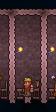

Guía del principiante
Esta es una guía para aquellos y aquellas que quieran informarse un poco antes de comenzar a jugar Terraria sin saber tanto acerca de este título. Aquí está todo lo que puedes saber sobre los comienzos del juego, desde tu primer día, hasta el inframundo. Si necesitas más información acerca de un bioma o un Objeto en específico, Esta wiki está llena de páginas para auxiliarte en tu aventura en Terraria.
Antes de jugar: Creación de mundo y personaje
Personaje
Antes de empezar a jugar, es necesario crear un personaje y un mundo. Si jugarás solo/a, empieza entrando a la parte de "Un jugador" y luego ve a "Crear personaje". Al crear tu personaje puedes elegir desde su género hasta su estilo de zapatos y camisa, pero si no quieres perder mucho tiempo puedes presionar el botón Aleatorio para que todo se genere al azar, ya que esto no afecta al juego.
Es importante recalcar que el juego cuenta con cuatro nucleos: viaje, suave, medio y extremo. Si es la primera vez que estás jugando Terraria lo más recomendable es que elijas el nucleo suave, ya que lo único que perderás al morir es un porcentaje de tus monedas (50% mundo normal, 75% mundo experto y 100% mundo maestro).
Nota: El aspecto de tu personaje (tanto tu peinado como el color de tus ropas) los puedes cambiar dentro del juego más tarde pero el color de piel
Mundo
Una vez que ya tengas un personaje, es necesario tener un mundo para poder jugar. Selecciona a tu personaje y haz clic en "Crear mundo". Los mundos son generados de forma aleatoria y en tres tamaños, que son elegidos por el jugador: pequeño, mediano y grande. Si es la primera vez que juegas Terraria
Una vez que elijas el tamaño de tu mundo hay que elegir el modo de juego(1.3.0.1 en adelante).
El Modo de tu mundo hará que la jugabilidad cambie mucho. Actualmente existen cuatro Modos de juego: Modo Viaje, Modo normal , Modo experto y Modo maestro. El Modo experto hará el juego mucho más difícil: los enemigos tendrán el doble de vida, daño y defensa (que en el modo normal), los efectos durarán el doble y mayoría de los Jefes poseerán nuevas mecánicas.
Nociones básicas antes de jugar
Arriba a la izquierda de la pantalla se encuentra tu inventario el cual cuenta con 10 accesos rápidos (del 1 al 0). Al iniciar tu mundo encontrarás en él tres objetos: La "Espada corta de cobre" (sirve para atacar monstruos), el "Pico de cobre" (sirve para picar bloques) y el "Hacha de cobre" (sirve para talar árboles). (Más información: Herramientas ).
Tu primer día
Todos los mundos comenzarán de día, específicamente a las 8:15 am. El punto en el que aparezcas se llama punto de generación y será la posición donde aparecerás siempre que mueras o entres de nuevo al mundo (más tarde es posible cambiarlo con una cama).
Nota: si al aparecer tienes uno o dos bloques de tierra, es que estaban en el punto de generación. Si construyes ahí, al reaparecer puede que rompas tu casa continuamente
Guide Encontrarás a un NPC (Personaje no jugable) de camisa gris y pelo anaranjado: ese es tu guía y te dará algunos consejos que pueden ser útiles al principio de tu aventura por Terraria. También te dirá todas las recetas existentes de cualquier objeto que sea un Material.
¿Como construir tu casa?
Condiciones de alojamiento. La casa debe estar completamente cerrada: 
- Las paredes laterales (bloques verticales) pueden estar hechas de bloques, puertas, plataformas o portones.
- El piso y el techo (bloques horizontales) pueden estar hechos de bloques, pozos de registro o plataformas.
- Los NPC requieren al menos un bloque sólido (sin plataforma) para permanecer de noche. Este bloque no puede colindar con una de las paredes laterales de la casa.
| Excepto techo, piso y paredes | Incluyendo techo, piso y paredes |
| 4X8 | 6X10 |
| 5X7 | 7X9 |
| 6X6 | 8X8 |
| 7X5 | 9X7 |
| 8X4 | 10X6 |
| 10X3 | 12X5 |
| 13X2 | 15X4 |